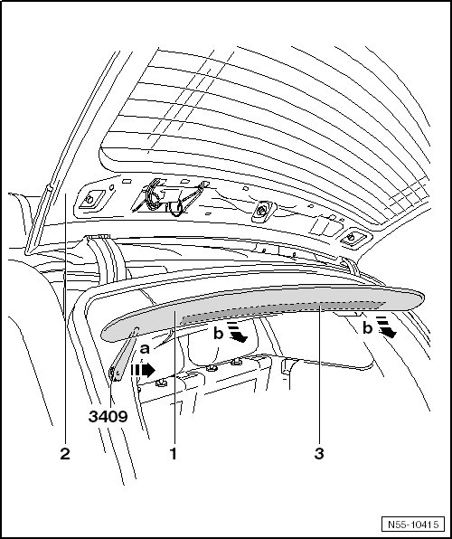
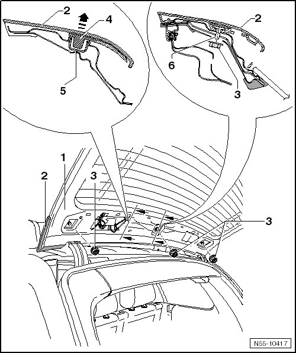

Rear Spoiler
Rear Spoiler
Rear Spoiler
Removing

- Slide the trim removal wedge (3409) between the hinged window - 2 - and the cover - 1 -.
- Pull the trim removal wedge (3409) through the tape - 3 - in - direction of arrow a - and loosen the cover from the hinged window.
- Remove the cover - 1 - from the hinged window - 2 - - arrows b -.

- Remove the nuts - 3 -.
- Loosen the rear spoiler - 2 - from the clamps - 4 -.
- Disconnect the brake lamp connector and hose connection.
- Remove the rear spoiler - 1 - - arrow -.
Installation
- Check the clamps - 4 - and the grommets - 5 - for damage. Replace them if necessary.
- When installing rear spoiler, tighten the nuts - 3 - to 6 Nm.
To install, perform the steps used for removal in reverse order.